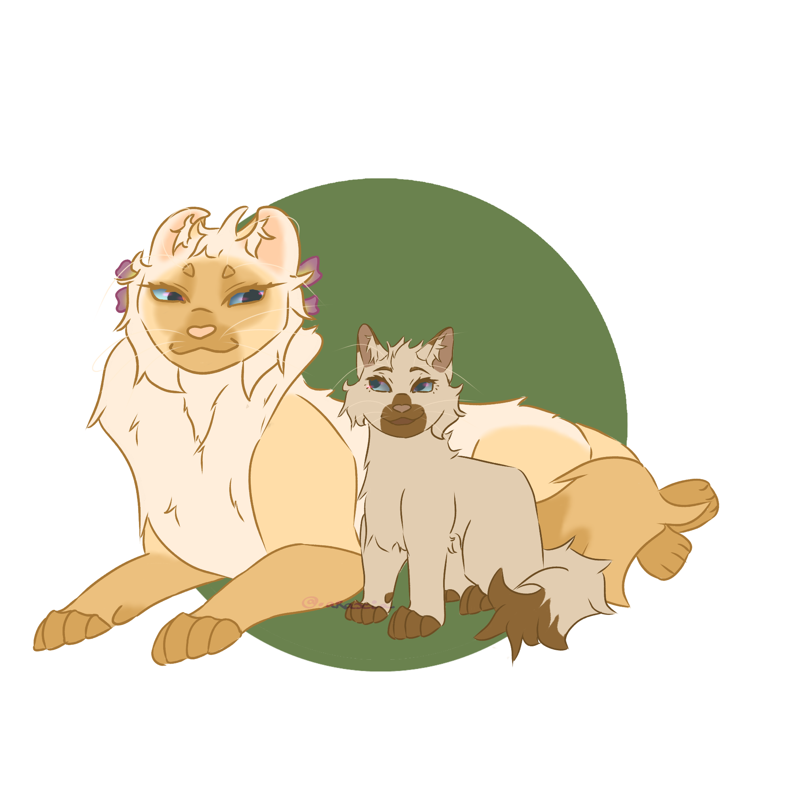

🍓 Tableau de Bord du Meneur
Étoile de Framboisier
Meneur du Clan du Tonnerre
- Stature : Colosse (40 cm au garrot)
- Poids : 6.0 kg (Rocher de muscles)
- Pelage : Mi-long • Dense & Protecteur
- Gènes : Colourpoint Roux (Red Point)
- Regard : Bleu clair cristallin 💎
📜 L'Écorce de la Concorde (Charte du Clan)
Établie à ses 20 lunes, cette charte dicte la conduite des guerriers du Tonnerre sous le règne d'Étoile de Framboisier.
I. La Loi du Premier Sang (Pacifisme Absolu)
La griffe ne doit jamais être la réponse à un miaulement. Il est formellement interdit d'engager le combat en premier. La force brute doit servir de bouclier, jamais de fléau.
II. Le Sanctuaire des Égarés (L'Accueil)
Tout chat perdu, solitaire blessé ou chaton abandonné trouvé sur le territoire doit être escorté au camp et nourri. L'hostilité envers l'étranger est un signe de faiblesse.
III. Le Serment de la Lignée (Indissolubilité)
Il est strictement interdit de séparer des fratries de chatons, qu'ils soient nés au clan ou rescapés. Si un chaton est adopté, ses frères et sœurs le sont également.
IV. Le Silence de la Canopée (Discrétion)
Un guerrier doit rester calme. Aucune information interne (faiblesses, manque de gibier) ne doit franchir l'entrée du camp. Le secret du camp est la force de ses murs.
V. Le Devoir d'Assistance (L'Altruisme)
Si un autre clan traverse une crise majeure (famine, épidémie), le Clan du Tonnerre se doit de proposer son aide, même si cela demande un sacrifice momentané.
VI. La Protection des Faibles
Les anciens, les reines et les malades mangent toujours les premiers. En patrouille, le plus fort couvre toujours le plus lent ou le plus jeune. On ne laisse personne derrière.
🍓 Caractère & Personnalité
Description Globale
Étoile de Framboisier est un félin dont la personnalité est aussi nuancée que les reflets argentés de son pelage. D’un tempérament fondamentalement calme et posé, il dégage une aura de sérénité qui apaise souvent les tensions au sein du Clan du Tonnerre. Ce n'est pas un miaulement qui s'impose par les cris ou la force brutale ; au contraire, il privilégiez toujours un miaulement décontracté et une discussion tranquille. Son côté pacifique le pousse à fuir les conflits inutiles, préférant la mélodie de la forêt au fracas des combats, ce qui fait de lui un diplomate né, capable de comprendre les points de vue de chacun pour ramener l'harmonie.
Cependant, derrière cette façade paisible se cache un esprit très autonome et parfois un peu déconnecté de la réalité. Le félin vit avec un véritable planning mental, effectuant ses tâches de manière mécanique et efficace sans qu’on ait besoin de lui donner d’ordres. Cette grande indépendance s’accompagne d’une tendance à être extrêmement distrait : Étoile de Framboisier s’évade souvent dans son propre monde imaginaire. Lorsqu’il rêve ainsi, il possède ce tic atypique de loucher de manière inconsciente, perdant alors totalement le fil de ce qui l’entoure, ce qui peut le conduire à trébucher maladroitement en patrouille.
Malgré sa douceur apparente, Étoile de Framboisier possède une facette plus sombre et hautaine. Conscient de son allure et de ses capacités, il a tendance à juger les autres de haut, surtout ceux qu'il estime faibles ou trop agités. Il ne s'exprime jamais de façon directe pour critiquer, mais il sait faire comprendre son mépris par des silences ou des regards lourds de sens. Ce caractère fier s'accompagne d'une certaine indiscrétion ; s'il est un confident sympathique en apparence, il ne peut s'empêcher de rapporter les secrets qu'il entend à ses adelphes. Pour lui, la famille est le seul cercle de confiance, et ses oreilles traînent toujours là où elles ne devraient pas pour nourrir les discussions privées avec sa fratrie.
Enfin, c'est un félin de rituels et de sensibilités. Très attaché à son confort, il ne déroge jamais à sa toilette matinale et déteste par-dessus tout le bruit, la saleté des rats ou le poids de la pluie sur son dos. Si sa prestance peut laisser croire qu'il est invincible, il cache une peur profonde de la mort et de la perte. Ayant déjà souffert de la disparition de ses sœurs et de son frère, il redoute plus que tout le vide laissé par ceux qu’il aime, faisant de ce chef hautain un être profondément marqué par le deuil, cherchant désespérément à protéger ce qu'il reste de son cercle intime.
✨ Ses Qualités (Détails)
Calme :
Étoile de Framboisier est l'incarnation même du calme, tant dans ses paroles que dans sa posture. Sa compagnie est particulièrement recherchée pour sa tranquillité ; il n'est pas de ceux qui élèvent la voix sans raison, préférant s'exprimer d'un miaulement posé, presque décontracté. Ce n'est pas un chat agité : il possède cette capacité rare de pouvoir rester immobile pendant un temps infini, sans aucune gêne. Durant ces longs moments de pause, il se contente d'observer avec finesse les mouvements de la forêt ou, plus souvent encore, de s'abandonner à ses rêveries.
Pacifiste :
Profondément pacifiste, il éprouve une aversion naturelle pour les conflits. Pour lui, la douceur des rayons du soleil et la mélodie de la forêt auront toujours plus de valeur que les feulements et les grognements hostiles. Étoile de Framboisier ne cherche jamais à imposer sa volonté par la force ou la pression ; il privilégie systématiquement une discussion sereine, s'efforçant de comprendre chaque point de vue avec empathie. Cette sagesse naturelle en fait un médiateur précieux sur qui le Clan peut compter pour apaiser les tensions par la simple force de sa parole.
Autonome :
D’un naturel extrêmement autonome, il accomplit ses tâches sans qu'on n'ait jamais besoin de les lui rappeler. Un véritable planning invisible seems structurer ses pensées, lui permettant d'agir avec une efficacité presque mécanique et sans attendre d'ordres. Cette grande indépendance, couplée à son habitude de savoir exactement quoi faire et à quel moment, le place parfois légèrement à l'écart des autres. Étoile de Framboisier évolue ainsi dans son propre monde, un jardin secret où il laisse entrer ses proches, mais où son autosuffisance lui sert de rempart.
🎭 Ses Défauts (Détails)
Pensif :
Étoile de Framboisier est un félin qui s'égare fréquemment dans son propre monde imaginaire. Bien qu'il sache garder les pattes sur terre quand il le faut, il lui arrive souvent de perdre le fil d'une conversation ou de sa concentration lors des patrouilles. Lorsqu’il s'évade ainsi, cela se remarque assez vite : son regard commence à errer vers le sol ou se fixe derrière son interlocuteur. S’il est en mouvement, il ne prête alors plus vraiment attention à ce qui l’entoure, ce qui le place dans des situations gênantes, comme trébucher sur une racine ou rater un obstacle, trahi par ses propres pensées.
Hautain :
S'il est un compagnon calme dont on apprécie la présence, il n'en reste pas moins hautain par instants. Conscient de son physique élégant, Étoile de Framboisier se permet de juger les autres de haut, ciblant surtout les plus faibles ou ceux qu'il estime faire preuve de laisser-aller. Il a cette tendance à rabaisser ses pairs, que ce soit derrière leur dos ou de manière plus subtile, juste devant leur museau. Il ne vous dira jamais frontalement ce qu’il pense de vous, mais il saura vous faire ressentir son mépris par une attitude ou un sous-entendu bien placé.
Indiscret :
À ce tempérament hautain s'ajoute une indiscrétion redoutable. Étoile de Framboisier ne se gêne jamais pour rapporter les secrets qu'il glane à ses fidèles frères et sœurs ; n'ayant confiance qu'en sa propre famille, il réserve ses informations à ce cercle restreint. Ainsi, bien qu'il se montre très sympathique au quotidien, celui qui prend le risque de trop se confier doit savoir que sa fratrie sera mise au courant. Il ne pose pas de questions directes pour ne pas s'exposer, mais il s'arrange toujours pour savoir : ses oreilles traînent partout, captant les murmures de la forêt.
🍽️ Goûts, Phobies & Habitudes
❤️ Ce qu'il aime : Étoile de Framboisier apprécie tout particulièrement les écureuils ; ce petit mammifère agile lui offre une quantité de viande idéale pour le rassasier durant une journée entière. Au-delà de cette préférence, le félin possède une palette de goûts très étendue : il ne rencontre aucun souci avec le poisson, qu'il consomme volontiers, tout comme les pigeons ou les colombes. Il aime par-dessus tout s'installer sur les hautes branches des arbres pour faire de longues siestes loin de l'agitation. Il adore également plonger ses pattes dans l'eau des étangs pour se rafraîchir et savourer l'odeur d'humus après une averse.
🖤 Ce qu'il déteste : Le félin n’apprécie absolument pas les grenouilles ni les rats. Il éprouve une aversion profonde pour leur odeur, leur goût, mais surtout pour leur texture qu'il juge repoussante. Il déteste également le bruit sous toutes ses formes (miaulements trop forts, Chemin du Tonnerre, fracas des orages) qui vient briser sa tranquillité. Il refuse autant que possible de se retrouver entièrement mouillé sous une averse car l'eau alourdit sa fourrure dense et gâche son allure.
⚠️ Craintes & Rituels : Il éprouve une crainte viscérale et irrationnelle pour les chenilles. En croiser une le pousse à labourer nerveusement le sol de ses griffes. Il porte aussi une peur profonde de la mort, enracinée depuis la perte de ses adelphes. Côté manies, il fait quotidiennement une toilette matinale très méticuleuse avant ses tâches de chef, et il possède un tic original : il se met à loucher de façon totalement inconsciente dès qu'il s'évade dans son monde imaginaire.
🍓 Apparence Physique
Description Globale
Étoile de Framboisier est un félin qui impose immédiatement le respect par sa stature hors du commun. Du haut de ses 40 cm au garrot, il dépasse la plupart de ses camarades de clan, ce qui, allié à son poids imposant de six kilos, en fait un individu particulièrement massif. Ce n'est pas seulement un chat de grande taille, c'est un véritable colosse dont la carrure puissante évoque la solidité d'un rocher. Ses épaules larges et son poitrail musclé témoignent de sa force brute, même si cette lourdeur naturelle le prive de la rapidité de ses pairs.
Son pelage est une merveille de nuances et de texture. De longueur mi-longue, sa fourrure possède une épaisseur idéale : elle est assez dense pour lui offrir un rempart contre les vents frais de la forêt, tout en restant suffisamment légère pour ne pas l'étouffer lorsque la bonne saison revient. Sa robe arbore une coloration Red Point d'une grande finesse. Son corps est d'un blanc crème immaculé, tandis que ses oreilles, son museau, ses pattes et sa queue sont teintées d'un roux chaud et vibrant, comme si les extrémités de son corps avaient été trempées dans le jus de baies bien mûres.
Le visage d'Étoile de Framboisier est marqué by des traits qui renforcent son originalité. Ses yeux, légèrement en amande, sont d'un bleu clair cristallin ; ce regard azur semble transpercer ses interlocuteurs et contraste magnifiquement avec le roux de son museau. Mais ce qui attire le plus l’attention, ce sont ses oreilles curvées. Cette particularité physique, totalement inoffensive pour sa santé, lui donne un aspect unique qu'il apprécie d'ailleurs beaucoup ; il trouve ce détail assez drôle et aime l'originalité que cela apporte à son profil de meneur.
En descendant vers ses membres, on découvre une autre spécificité étonnante : Étoile de Framboisier est polydactyle. Sur ses deux pattes avant, il possède un doigt supplémentaire. Ce trait renforce l'aspect massif de ses pattes, qui ressemblent à de larges battoirs, et participe à sa force de frappe lors des blocages au sol. Enfin, on ne peut ignorer la longue cicatrice qui court le long de sa queue, dont le bout roux est marqué par cette balafre, souvenir permanent de sa chute des Rochers du Soleil, ni les deux anneaux de freesia qu'il porte fièrement derrière ses oreilles en hommage à sa sœur.
💪 Ses Points Forts (Détails)
Au vu de son gabarit imposant, Étoile de Framboisier est un félin qui possède une force de frappe hors du commun. Que ce soit dans la puissance de ses coups de patte, sa capacité à bloquer ses adversaires au sol ou la force de sa morsure, il se révèle être un véritable rocher de muscles incomparable. Cette carrure massive rend ses assauts particulièrement redoutables ; peu de félins peuvent se vanter de pouvoir rivaliser avec lui lors d'un corps à corps frontal.
Le meneur est également doté d’une excellente résistance physique, capable de supporter aussi bien le froid mordant que les blessures de combat. Bien qu’il ait gagné en robustesse en atteignant sa taille adulte, il reste, comparativement à ses camarades, un chat extrêmement solide. Étoile de Framboisier possède un mélange de muscles denses et de graisse protectrice qui, combiné à son pelage mi-long, lui permet de rester au chaud durant l'hiver et d'encaisser les coups sans faiblir. Il faut généralement des adversaires d'une taille considérable pour espérer le mettre hors de combat.
Une autre particularité physique le distingue : ses pattes arrière sont plus longues que ses pattes avant. Grâce à cette anatomie singulière, il possède une aptitude supérieure pour grimper aux arbres ou sauter bien plus haut que les autres membres du Clan. Ses membres postérieurs, qui rappellent ceux des lièvres de la lande, lui permettent d'effectuer des bonds impressionnants et presque sans limites. De plus, nager ne représente aucun souci pour lui, car ses pattes musclées lui offrent une propulsion efficace et constante dans l'eau.
🏃♂️ Ses Points Faibles (Détails)
Bien qu’il soit un véritable rocher de muscles, Étoile de Framboisier n'est pas sans failles, et sa carrure massive le rend particulièrement lent. Lorsqu’il s’agit de faire la course, il finit inévitablement dernier, son corps n’étant tout simplement pas taillé pour la vitesse pure. Cette lourdeur le rend peu efficace pour les chasses rapides ou la traque de proies agiles. Il lui arrive ainsi fréquemment d’être le dernier à regagner le camp, subissant parfois les moqueries des apprentis qui s'amusent de sa démarche pesante.
En plus de sa faible vitesse, le meneur ne possède pratiquement aucune agilité. Étoile de Framboisier est incapable de se faufiler dans des endroits étroits, même en faisant de son mieux ; ses épaules massives, son poitrail imposant et le reste de son corps sont bien trop larges pour les passages exigus de la forêt. Cette morphologie l’empêche également d’être un bon chasseur, car il ne peut pas changer de direction brusquement pour suivre les zigzags d'une proie. Il voit donc le plus souvent ses cibles lui échapper, distancé par leur rapidité ou leur souplesse supérieure.
Enfin, le jeune meneur souffre d’un manque criant d’endurance qui l’épuise à une vitesse déconcertante. Même lors des combats, bien que ses coups soient redoutables, il ne peut pas tenir la cadence très longtemps et s'essouffle rapidement. Cette fatigue prématurée le suit dans toutes ses activités physiques, l'obligeant à dormir bien plus longtemps que ses camarades pour récupérer ses forces. À cause de cela, il se sent souvent d'une certaine inutilité lors des sessions de chasse prolongées, incapable de suivre le rythme soutenu du groupe.
🌸 Marques & Accessoires
Accessoires : Étoile de Framboisier porte avec une élégance discrète deux anneaux de freesia nichés derrière ses oreilles. Loin d'être une simple coquetterie, ces fleurs sont un cadeau inestimable de sa défunte sœur, offert le jour où il a reçu son nom de guerrier. Malgré son tempérament parfois hautain, il veille sur ces anneaux avec une douceur infinie, les portant comme un hommage permanent à ce lien fraternel que la mort a brisé.
Cicatrices : Il porte une longue cicatrice qui court tout le long de sa queue. Cette marque est le souvenir d'un événement tragique survenu aux Rochers du Soleil. Son propre frère, dans un élan de curiosité aussi sombre qu'irréfléchi, l'a poussé du haut des pierres géantes pour vérifier si son nouveau statut de chef lui octroyait réellement le don des neuf vies. L'expérience foi concluante, mais brutale : Étoile de Framboisier a effectivement perdu sa première vie dans la chute. Il ne lui en reste désormais plus que huit, et cette balafre indélébile pour lui rappeler la trahison de son sang.
🍓 Lignée & Origines
➤ Répartition : 75% [Clan du Tonnerre] / 25% [Domestique] (Origines Highlander via Rosie)
Brume de Saule
Grand-mère
Écorce de Chêne
Grand-père
Rosie Highlander
Grand-mère
Éclat de Pierre
Grand-père
Plume de Noisetier
Tante (Mat.)

Douce Sève
VivanteMère Biologique
PNJ

Racine de Bouleau
VivantPère Biologique
PNJ
Croc de Lierre
Oncle (Pat.)

Épine de Fraisier
Frère

Ombre de Myrtille
Sœur

Nuage de Mûre
Sœur

Étoile de Framboisier
MeneurVous
Emplacement libre
InconnuCompagne / Compagnon
À voir en RP...

Nuage de Nénuphar
VivanteSœur Adoptive
@Une_Bretonne

Petit Galopin
VivantFils Adoptif
@Oriyakii
Petit Courlis
VivantFils Adoptif
@_.velyxia
Aucun petit-chaton
VerrouilléPetits-enfants
Futur lointain
🍓 Index & Guide des Relations
Les liens de sang, de cœur et de devoir qui structurent la vie du meneur.
🗂️ Affinités & Sentiments
🐾 Relation au Clan du Tonnerre
Pour Étoile de Framboisier, son clan représente bien plus qu'un simple groupe de guerriers : c'est sa famille, son refuge et son cercle d'amis. Auprès de ses camarades, il se sent profondément à l’aise et leur accorde une confiance totale. Son dévouement est tel qu'il n'hésiterait pas une seule seconde à offrir sa propre vie pour protéger l'un des siens. Pour lui, la survie et le bien-être du Clan du Tonnerre passent avant ses propres besoins.
Pourtant, malgré cet amour indéfectible, une ombre plane sur son quotidien. Son très jeune âge, associé à la lourde responsabilité de son rang, le plonge dans un doute constant. Il hésite souvent sur la marche à suivre, craignant par-dessus tout le regard et le jugement de ses aînés. Cette peur de voir ses camarades lui tourner le dos ou remettre en question sa légitimité à cause de ses vingt lunes est une angoisse qui ne le quitte jamais vraiment.
Loin de se laisser abattre par cette insécurité, Étoile de Framboisier puise dans ses craintes une force insoupçonnée. Il est animé par le désir ardent de prouver sa valeur et de montrer qu'il est digne du choix du Clan des Étoiles. Il est prêt à tout, à travailler plus dur que n'importe qui et à affronter ses proprios faiblesses, pour devenir le meilleur meneur que le Clan du Tonnerre n'ait jamais connu. Derrière son calme apparent, brûle la volonté de marquer l'histoire de la forêt par sa sagesse et sa protection.
👥 Les Visages de son Quotidien
Nuage de Nénuphar
Joué par : @Une_Bretonne
Sa sœur adoptive, rescapée du Clan de la Rivière après sa tragique dissolution. Étoile de Framboisier l'aime énormément. Elle partage son tempérament calme et posé, ce qui crée un écho réconfortant pour lui. Pourtant, une barrière invisible persiste : elle s'efforce de le garder à distance, un recul que le meneur tente d'apprivoiser avec douceur.
Petit Galopin
Joué par : @Oriyakii
Son premier fils adoptif. Étoile de Framboisier l'a découvert abandonné à la lisière même du territoire du clan. Ce moment a marqué son cœur à tout jamais : n'écoutant que son instinct protecteur, il l'a pris sous son aile. Qu'importe l'absence de liens de sang, Galopin est son fils, le symbole vivant de son refus de voir une enfance brisée.
Petit Courlis
Joué par : @_.velyxia
Son second fils adoptif, qu'il chérit tout autant. Étoile de Framboisier éprouve pour lui un amour incommensurable et protecteur. À ses côtés, le jeune meneur oublie le poids de son masque de chef pour n'être qu'un père dévoué. Courlis est ancré profondément dans son cœur, précieux gardien de son cercle intime.
Aube du Myosotis
PNJ (Guérisseuse)
La guérisseuse du clan. Elle représente un point d'ancrage crucial pour lui, une épaule spirituelle indispensable pour assumer les lourdes responsabilités de son rang de meneur. Pourtant, leur relation est teintée d'une froideur latente : elle maintient une distance prudente et se montre méfiante à son égard, troublée par le fait qu'il ait été choisi si jeune par le Clan des Étoiles.
Sveltesse de la Fouine
PNJ (Apprenti)
Son tout premier apprenti. Étoile de Framboisier a reçu la charge de son éducation alors qu'il n'avait lui-même que 13 lunes, une marque de confiance précoce. Le meneur apprécie énormément son apprenti et affectionne les moments passés à ses côtés à lui transmettre sa vision de la forêt et son amour de l'observation.
🌍 Diplomatie & Frontières Extérieures
Le Clan du Vent
Neutralité bienveillanteÉtoile de Framboisier n’a pas encore d’avis bien tranché à leur sujet. Fidèle à son habitude de rester dans son propre monde et d’observer de loin, il estime qu'il ne les connaît pas encore assez bien pour s'exprimer ou porter un jugement sur leur manière de vivre. Cependant, malgré son côté parfois distant, son cœur reste profondément pacifique. De ce qu'il a pu entendre à leur sujet, il garde une porte ouverte : si jamais les guerriers de la lande venaient à avoir besoin d’une quelconque aide, il n'hésiterait pas à la leur accorder, considérant que l'entraide doit primer sur l'ignorance.
Le Clan de l’Ombre
Méfiance et CompassionSes sentiments sont beaucoup plus mitigés. Les rumeurs qui circulent sur Étoile Douce, combinées à ce qu’il a pu observer lui-même lors de la dernière Assemblée, le plongent dans un certain malaise. Il n'est pas tout à fait à l'aise face à l'énergie qui se dégage de ce clan et de sa meneuse. Pourtant, là où d'autres ne verraient que de l'hostilité, Étoile de Framboisier ne peut s'empêcher de ressentir une part de pitié pour eux. Il regarde leur situation avec une pointe de tristesse, se demandant si leur attitude n'est pas simplement le reflet de souffrances cachées qu'il aimerait, au fond, pouvoir apaiser.
Chronique d'un Destin Brisé
Le parcours d'un colosse devenu le gardien de la concorde au sein du Tonnerre.
Période Chaton (0 - 6 lunes)
Naissance au sein du clan sous le regard distant et exigeant de ses parents, Racine de Bouleau et Douce Sève. Dès ses premiers pas, le jeune chaton se démarque par sa taille imposante, mais se heurte vite à la froideur émotionnelle de ses géniteurs. Durant cette période cruciale, ses seuls piliers sont ses adelphes de portée : Épine de Fraisier, Ombre de Myrtille et Nuage de Mûre. C'est avec eux qu'il apprend la chaleur de la confiance, une complicité fraternelle qui forgera son attachement viscéral envers les siens.
Période Apprenti (6 - 12 lunes)
Devenu apprenti, son gabarit explose pour atteindre une stature de colosse, lui offrant une force brute remarquable mais le privant de la vélocité naturelle de ses camarades. C'est le moment des premiers grands drames : la tragédie frappe sa fratrie de plein fouet, le laissant seul survivant de sa portée d'origine. C'est aussi durant ces lunes qu'il subit sa chute mémorable des Rochers du Soleil, y laissant sa toute première vie et une longue cicatrice sur sa queue. Marqué physiquement et psychologiquement par la perte et la fragilité de l'existence, il commence à s'isoler dans ses pensées et à porter ses célèbres anneaux de freesia en hommage à sa sœur.
Période Guerrier (12 - 15 lunes)
Son baptême de guerrier n'atténue pas ses doutes profonds ni sa peur constante du jugement d'autrui. Alors qu'il tente de stabiliser son quotidien auprès de sa sœur adoptive, Nuage de Nénuphar, le clan bascule dans l'horreur. Lors d'un terrible incident au cœur du camp, il assiste au spectacle macabre du corps ensanglanté de son meneur, Étoile Brumeuse, brutalement transpercé par une branche d'arbre. Ce traumatisme visuel scelle à jamais son dégoût pour la violence gratuite et les effusions de sang futiles.
Période Meneur (15 - 20 lunes)
Propulsé à la tête du Clan du Tonnerre à seulement 15 lunes sous le nom d'Étoile de Framboisier, il doit dissimuler son anxiété derrière un masque hautain et calculé pour asseoir sa légitimité face aux anciens. Témoin des colères répétées du Clan des Étoiles (destruction du chêne à l'assemblée, dissolution du Clan de la Rivière), sa foi reste inébranlable. À l'aube de ses 20 lunes, désormais mieux ancré dans ses fonctions, il officialise sa charte pacifique, « L'Écorce de la Concorde », bien décidé à offrir à sa forêt et à ses jeunes chatons, Petit Galopin et Petit Courlis, un avenir serein loin des guerres incessantes.
La Suite de l'Histoire...
À écrire au fil des lunes et des rencontres lors des prochains jeux de rôle.
🍓 L'Héritage des Neuf Vies
Le décompte des souffles sacrés accordés par le Clan des Étoiles.
Bravoure Perdue à 15 lunes
Poussé du haut des Rochers du Soleil par son propre frère, Épine de Fraisier. Ce dernier souhaitait lâchement vérifier si son nouveau statut de chef lui octroyait réellement le don divin des neuf vies.
Sérénité Active
Le don d'un esprit apaisé pour guider son clan sans céder à la panique de la forêt.
Empathie Active
La capacité de ressentir et comprendre la douleur des siens, mais aussi celle de ses rivaux.
Loyauté Active
L'attachement indéfectible aux valeurs du Clan du Tonnerre et à la protection de ses membres.
Patience Active
La force d'attendre et d'observer avant d'agir, essentielle pour un meneur pacifique.
Sagesse Active
Le discernement nécessaire pour faire appliquer la Charte de la Concorde et rejeter la guerre inutile.
Résilience Active
La faculté de se relever après les pires traumatismes, du deuil de sa portée à la mort de son ancien chef.
Humilité Active
Pour ne jamais oublier qu'un chef n'est rien sans ses guerriers, malgré le masque de fierté qu'il s'impose.
Espoir Active
La certitude qu'un avenir radieux et pacifique attend ses chatons au sein de la forêt.
🍓 Le Journal des Lunes
Suivi chronologique des archives et des aventures vécues en jeu de rôle écrit.
Cliquez sur les titres des lignes pour accéder directement au sujet sur le forum.
| Lune | Intitulé du Sujet & Lien | Compagnons de route | Résumé de l'évolution |
|---|---|---|---|
| Lune 15 | La Chute fatidique | Épine de Fraisier | Perte de la première vie aux Rochers du Soleil. Naissance de sa peur de la mort. |
| Lune 20 | Les Murmures de la Concorde | Le Clan du Tonnerre | Proclamation officielle de la charte de paix au centre du camp. Étoile de Framboisier assoit son masque. |
| Lune ?? | Nouveau sujet en cours... | — | À compléter après écriture sur le forum. |
Galerie d'Artifices
Les représentations visuelles d'Étoile de Framboisier. Un immense merci aux artistes !
Portrait Officiel
Par : @Oriyakii

Illustration
Par : @Moonlight

Illustration
Par : @0rfraie

Illustration
Par : @Youpi

Illustration avec son fils
Par : @.araxia.

Doodle
Par : @.araxia.

Doodle
Par : @Oriyakii